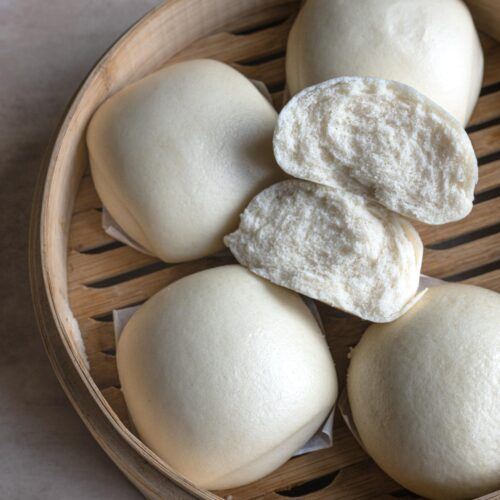

Home
Mantou

Description
Mantou, often referred as chinese steamed bun, is a white and soft type of steamed bread or bun popular in northern China
Ingredients
- 500g flour
- 5g of yeast
- 10g of sugar
- 250ml of water
Instructions
- Combine flour, yeast, sugar, and water
- Knead the dough until smooth
- Let the dough rise for 1 hour
- Divide the dough into small balls
- Steam the dough for 15 minutes